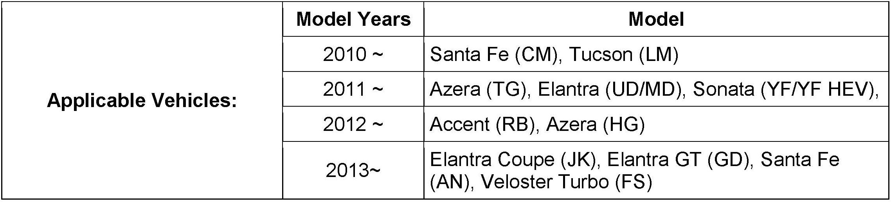
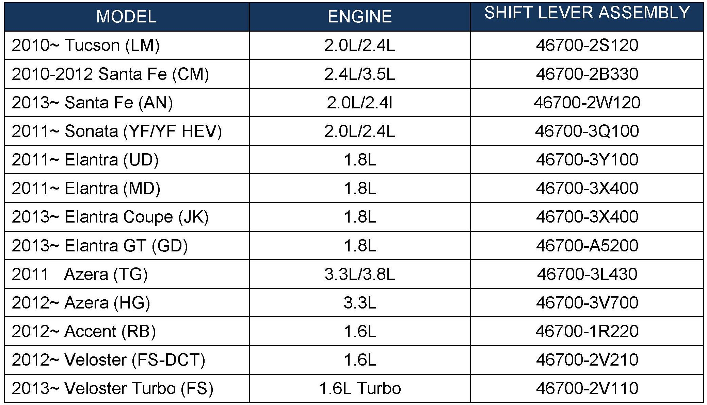
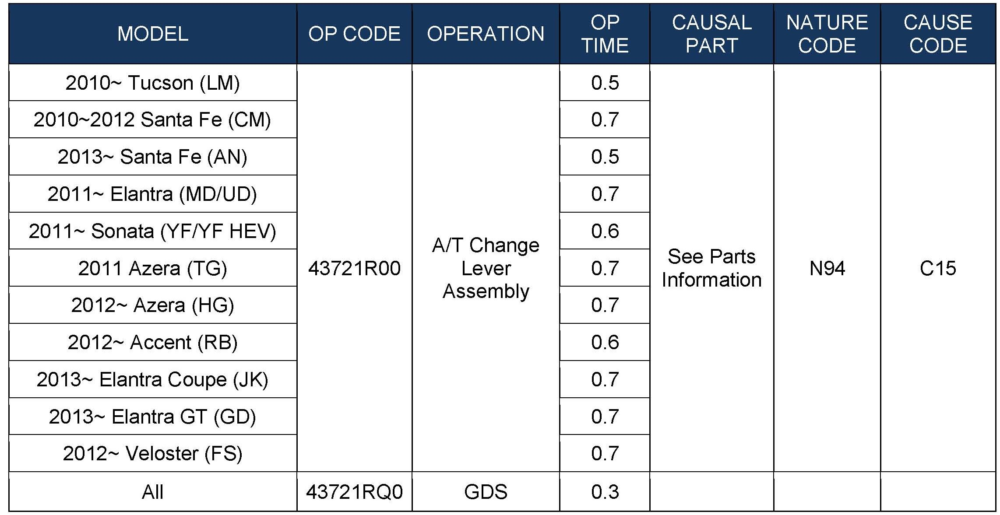
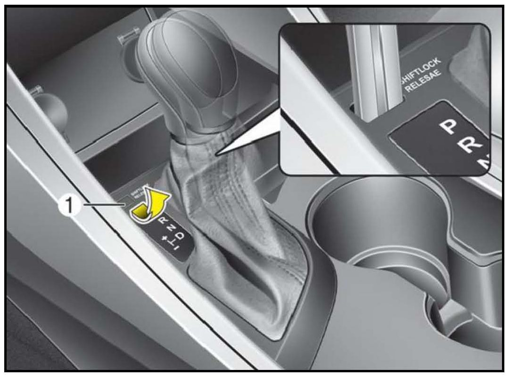
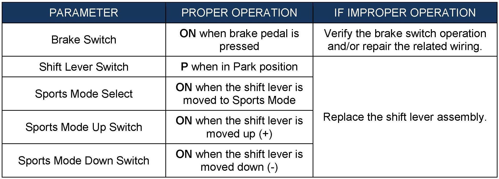
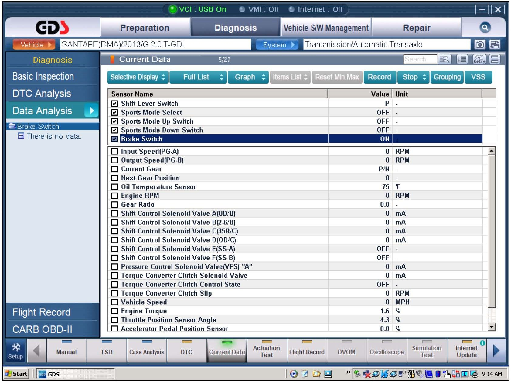

A/T - Various Shift Lever Issues
GROUPAUTOMATIC TRANSMISSION
DATE
JANUARY 2013
NUMBER
13-AT-001
MODEL
Accent (RB), Azera (TG/HG), Elantra
(UD/MD/GD/JK), Santa Fe (AN/CM), Sonata
(YF/YF HEV), Tucson (LM), Veloster Turbo
(FS)
SUBJECT:
AUTOMATIC TRANSAXLE SHIFT LEVER DIAGNOSIS (6-SPEED)


Description:
This bulletin provides the procedure to diagnose shift lever conditions for 6-speed transaxles.

WARRANTY INFORMATION:
SERVICE PROCEDURE:
1. If the condition is "Accessory power remains on when shifting into Park", go to Step 6 and replace the shift lever assembly.
2. Turn the ignition key to the ON position or depress the Start/Stop Button two times and depress the brake pedal.
Confirm the shift lever moves smoothly into all gear positions.
^ If the shift lever will not move out of Park, go to Step 3.
^ If the shift lever operates properly, go to Step 4.

3. Use the ignition key or a screwdriver to engage the shift-lock override. Move the shift lever through all gear positions to confirm that it operates properly.
^ If the shift lever moves out of Park, go to Step 4.
^ If the shift lever does not move out of Park, go to Step 6 and replace the shift lever assembly.
4. Attach a GDS and check for any DTCs in the "Automatic Transaxle" menu. Record the DTCs and their descriptions. Delete the DTCs.
If any DTCs are found, refer to the appropriate shop manual and follow the repair procedure.


5. From the GDS, select the following parameters from the "Current Data menu and confirm proper operation.
^ If OK, the service procedure is complete.
^ If not, refer to the table for repair guidance.
6. Refer to the relevant shop manual, Automatic Transaxle System, Automatic Transaxle Control System, Shift Lever and Repair Procedures and replace the shift lever assembly.
7. Reinstall the removed parts in the reverse order of removal.
8. Move the shift lever through all gear positions and confirm the shift lever and shift indicator lights function correctly.
9. Confirm the engine starts in Park and Neutral.